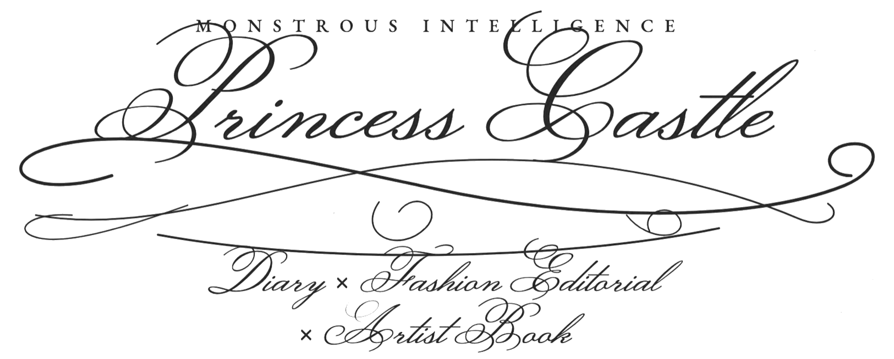

Schreiben · Mode · Malerei · Fotografie
Princess Castle ist ein langfristiges Kunst-, Literatur- und Modeprojekt mit jungen Frauen mit und ohne Behinderung aus Augsburg und Umgebung. Über mehrere Monate entwickelt jede Teilnehmerin ihr eigenes Princess Castle Diary – einen Hybrid aus Traumtagebuch, Skizzenbuch, Modebuch und persönlichem Bilderarchiv. Daraus entstehen ein professionelles Fashion Editorial und schließlich ein gemeinsames Künstlerinnenbuch, das Elemente einer Modezeitschrift, eines literarischen Tagebuchs und eines Artist Books miteinander verbindet. Die Publikation versammelt die individuellen Fantasiewelten der Teilnehmerinnen zu einem kollektiven Werk, in dem Mode, Literatur, Malerei und Fotografie ineinandergreifen.
Ausgangspunkt ist die Frage, wie wir durch Fantasie eine eigene Welt erschaffen. Welche Formen nimmt diese Welt an? Was tragen wir in dieser Welt? Welche Tiere leben dort? Welche Figuren begegnen uns? Was wünschen wir uns, was fürchten wir, was ist unser Dark Secret? Die Teilnehmerinnen schreiben, zeichnen, malen, fotografieren mit Polaroids, sammeln Bilder und Stoffe und erfinden Kleider, Tiere, Doppelgängerinnen und Geschichten. Das Diary dokumentiert diese Welt nicht nur – es bringt sie nach und nach hervor.
Das Projekt knüpft dabei an Anna Giens Arbeit an ihrem nächsten Roman The Beast an, in dem weibliche Fantasie und literarisches Worldbuilding eine zentrale Rolle spielen: die Fähigkeit, durch Fiktion eine eigene Wirklichkeit zu entwerfen und sich innerhalb dieser Wirklichkeit auch selbst anders vorzustellen. Princess Castle überträgt diese literarische Praxis in einen offenen, kollektiven Prozess. Nicht eine bereits fertige Geschichte wird vorgegeben; die Welt entsteht aus den Wahrnehmungen, Entscheidungen und Fantasien der Teilnehmerinnen selbst.
The Princess Castle Diary
Jede Teilnehmerin erhält zu Beginn ein persönliches Diary. Es kann sich zu einem Tagebuch, Traumtagebuch, Skizzenbuch, geheimen Buch und Modearchiv zugleich entwickeln. Schreiben ist dabei nur eine mögliche Sprache: Zeichnung, Malerei, Polaroid, Collage, Kleidung und Erzählen stehen gleichberechtigt nebeneinander. Mischformen sind im Laufe des Workshops ausdrücklich erwünscht.
In regelmäßigen künstlerischen Sessions wird das Material weiterentwickelt und zwischen den Medien übersetzt: Ein Traum wird zu einem Kleid. Eine Zeichnung zu einer Figur. Eine Figur bekommt ein Tier. Ein Polaroid wird zu einer Szene. Eine Tagebuchseite wird zum Ausgangspunkt einer Modefotografie.
Einen zusätzlichen Fundus bilden Geschichten und Bilder aus Augsburg: Marie Antoinettes Aufenthalt in der Stadt auf ihrer Brautfahrt 1770, Philippine Welser, die heimlich einen Habsburger heiratete, die erfolgreiche Textilunternehmerin Anna Gignoux oder Frauen, die als Hexen verfolgt wurden und denen fantastische Verwandlungen zugeschrieben wurden. Diese Geschichten werden nicht nachgespielt. Die Teilnehmerinnen können sie verändern, verdoppeln, mit der eigenen Gegenwart vermischen oder vollkommen neu erfinden.
Die Geschichte eröffnet einen Raum, den die Fantasie weitergestaltet.
From Dream Diary to Fashion Editorial
In einer zweiten Phase beginnen die privaten Bildwelten der Diaries, körperlich und räumlich zu werden. Aus den entstandenen Figuren, Farben, Kleidern, Tieren, Träumen und Geschichten wird gemeinsam mit professionellen Partner:innen ein Fashion Editorial entwickelt.
Mode wird dabei zu einer Form des Worldbuildings: Wie kleidet sich die Person, die ich in meiner Fantasie bin? Was trägt sie an einem gewöhnlichen Tag, um ihn besonders zu machen? Was an einem Festtag? Welches Tier begleitet sie? Was ist ihr Geheimnis?
Gemeinsam mit möglichen Modepartnern wie Lodenfrey, Jil Sander oder A Kind of Guise werden Looks aus den Diaries entwickelt. Die Teilnehmerinnen stehen anschließend selbst vor der Kamera – nicht lediglich als Models, sondern als Co-Autorinnen ihrer Bilder. Als erster möglicher Medienpartner ist ELLE vorgesehen.
The Artist Book
Am Ende kehren die Fotografien in das Medium zurück, mit dem das Projekt begonnen hat. Eine hochwertig gestaltete Publikation verbindet Diary-Seiten, Träume, Handschriften, Polaroids, Zeichnungen und Collagen mit dem fertigen Fashion Editorial.
Sie soll kein dokumentarischer Bericht über ein Inklusionsprojekt sein, sondern ein eigenständiges Künstlerinnenbuch – ein gemeinsames Werk, in dem die individuellen Handschriften und imaginären Welten der Teilnehmerinnen sichtbar bleiben.
Monstrous Intelligence
Princess Castle ist Teil von MONSTROUS INTELLIGENCE, einer von Anna Gien und Mansi Tiwari (Universität Zürich) entwickelten Reihe an der Schnittstelle von Literatur, Kunst und Forschung. Ihr Netzwerk verbindet Kontexte der Universität Zürich, Universität der Künste Berlin, University of Oxford und des Oxford Centre for Life-Writing mit Akteur:innen aus Literatur, Kunst und Publizistik, darunter DIE ZEIT, Monopol Magazin und Topshelf Night am Aargauer Literaturhaus Lenzburg.
Die Reihe untersucht, wie weibliche Fantasie, Wahrnehmung und Begehren historisch immer wieder als irrational, exzessiv oder „monströs“ markiert wurden – und fragt im Zeitalter künstlicher Intelligenz, welche anderen Formen von Intelligenz in Traum, Imagination, Assoziation und Worldbuilding liegen können.
Eine Leitfigur dafür ist die bête noire, das schwarze Tier: Schatten, Doppelgängerin und Verkörperung einer Fantasie, die sich einer vorgegebenen Wirklichkeit entzieht. Sie verbindet Monstrous Intelligence, Princess Castle und The Beast miteinander – drei Projekte, die auf unterschiedliche Weise danach fragen, wie aus Fantasie eine Welt wird.